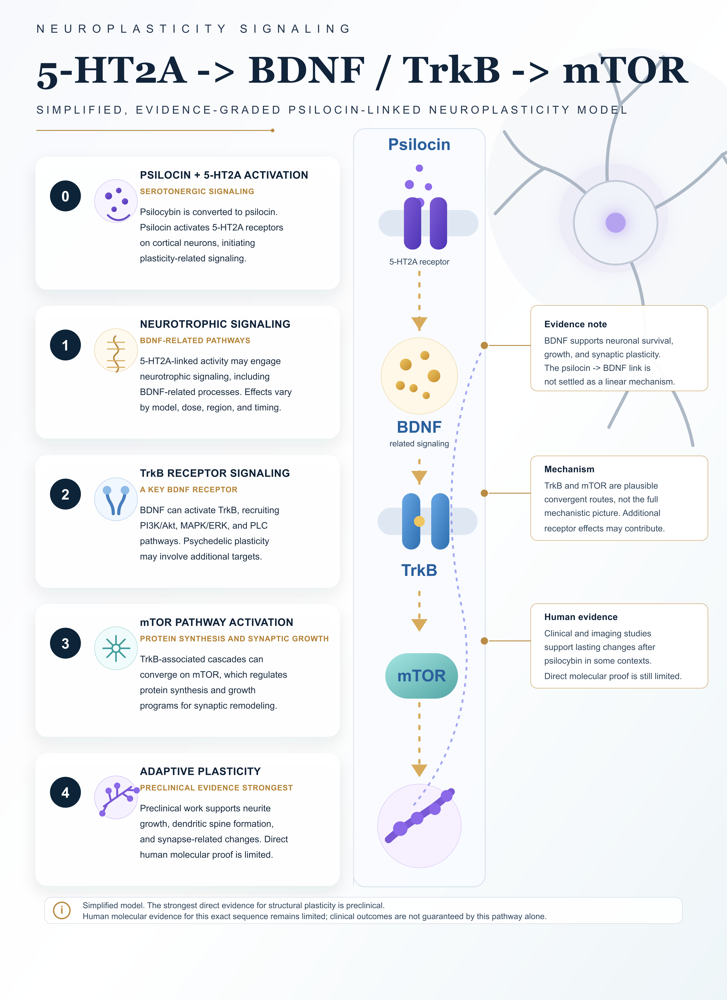
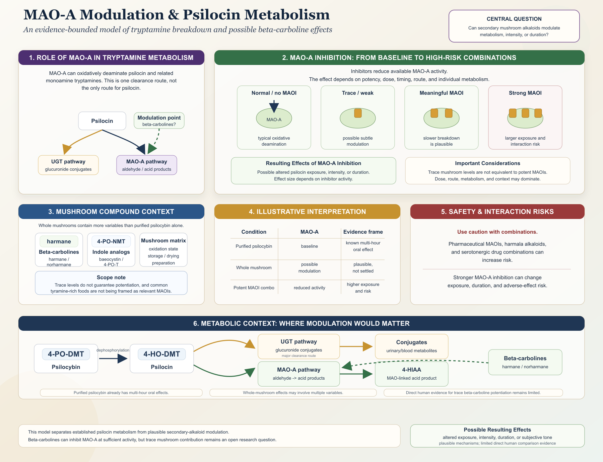
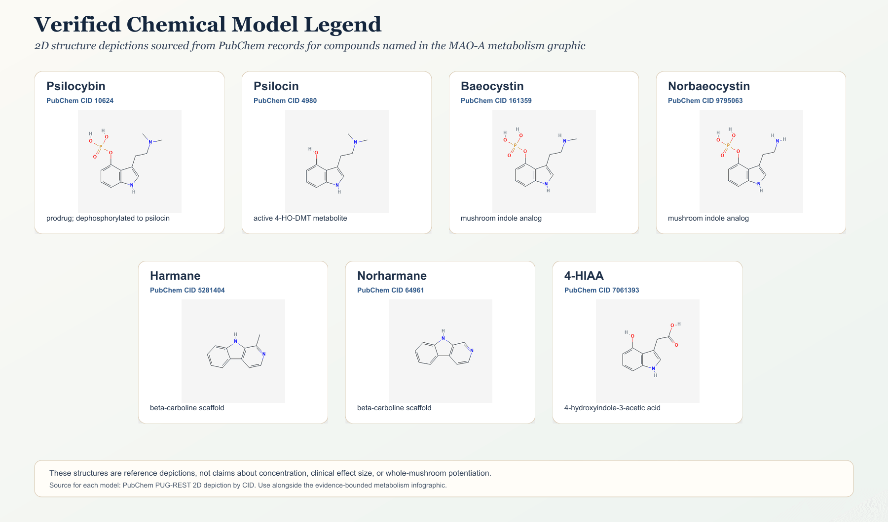

Neuroplasticity & Metabolism
Pathway diagrams for psilocin-linked neuroplasticity, psilocin metabolism, secondary mushroom alkaloids, MAO-A, and 4-HIAA
Pathway diagrams for psilocin-linked neuroplasticity, psilocin metabolism, secondary mushroom alkaloids, MAO-A, and 4-HIAA
This page gathers the detailed science layer that originally anchored the project: psilocin-linked neuroplasticity, psilocin metabolism, MAO-A modulation, beta-carbolines, 4-HIAA, and the chemical structure legend.
These diagrams are the main pathway layer of the project. References sit near the material they support, while the full bibliography and raw research notes are available in the downloads section.
Neuroplasticity refers to the brain's ability to reorganize, adapt, and form new neural connections. Psychedelic compounds are being studied for effects on dendritic spine growth, synaptic density, and signaling pathways involved in adaptive neural change.

This diagram separates established psilocin metabolism from plausible secondary-alkaloid modulation. It treats trace beta-carbolines and whole-mushroom variables as open research questions.

